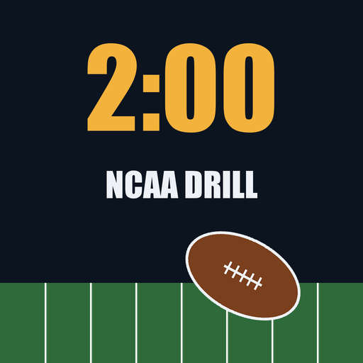
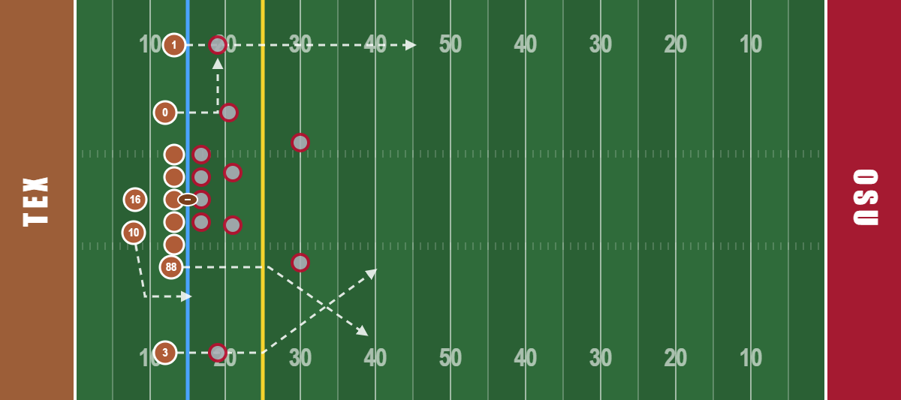
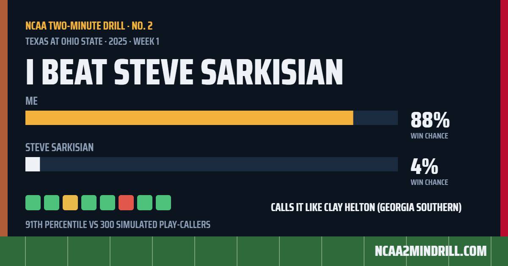
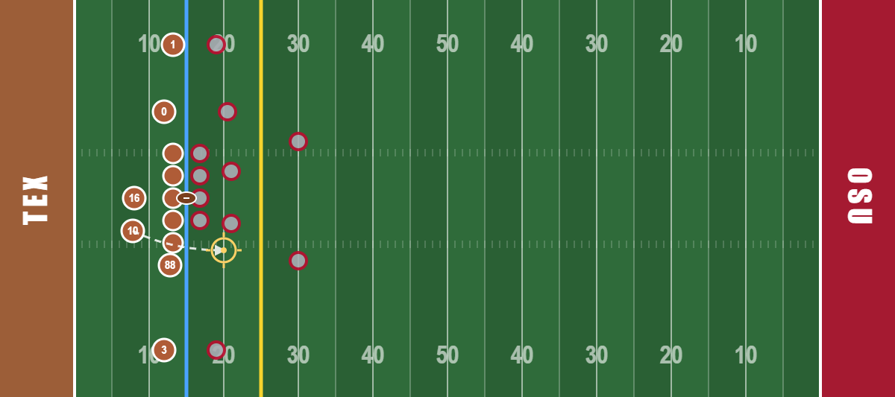

A free daily game at ncaa2mindrill.com. One real late-game FBS drive a day, every snap animated, scored against the real head coach. Saban mode and Cignetti mode go in the app for one $0.99 unlock. Fan-made; not affiliated with anyone.


The pass screen: a route for every receiver, the defense's look already shown (here: blitz, linebacker creeping right).

Every result makes this 1200×630 card, sized for X, iMessage and group chats.
Your win chance after your drive vs. the coach's after his. "I beat Steve Sarkisian 88%–4%" is the hook.
Your calls next to the coach's actual calls, each graded 🟩🟨🟥 against the best option on the board.
300 simulated college play-callers replay the same drive. You get a rank and a dry line to go with it.
Your pass rate overall, on early downs and on passing downs, matched to a real FBS head coach's tendencies.

The run game: tap where you want him to hit it. The crosshair is the hole; the concept is how he gets there.
The core. Reply under viral late-game clips within the hour: "we have that drive, go call it better" + link. Saturday nights and Sunday mornings.
One honest builder post. Then show up in game-thread aftermath with the exact drive and the coach's real calls. Be a person, not a brand.
Post the day a drive from their team is the daily. Lead with the situation, not the product.
The share card is the product here. Make it the thing people screenshot and argue about.
Wordle, Connections, Immaculate Grid crowd. "A daily for football people."
#CFB, #CollegeFootball, the day's team hashtags. Tag official team accounts only about their actual game. Never tag coaches.
{away} at {home}, {year}, {coach}, {down by N}, {clock} left. Half one-liners, half questions.Offseason: lean on Practice (822 drives), the Coaches table, and throwback drives ("two years ago today"). App launch week replaces the calendar with the launch thread, the r/CFB post, and daily replies.
Game · https://ncaa2mindrill.com
App page · https://ncaa2mindrill.com/app
Privacy · https://ncaa2mindrill.com/privacy.html
Store links · [add when approved]
App launch · [date] · iOS + Android · hard modes are one $0.99 unlock; the website stays free
Data · cfbfastR / SportsDataverse play-by-play, 2023–2025 FBS